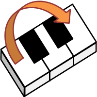
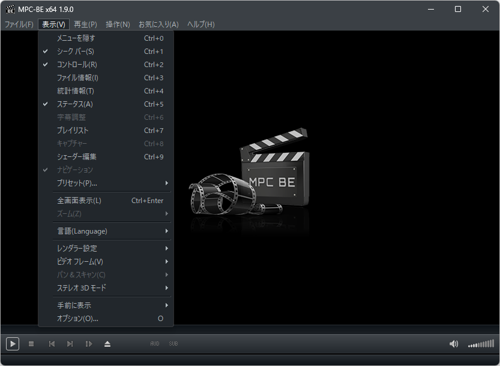
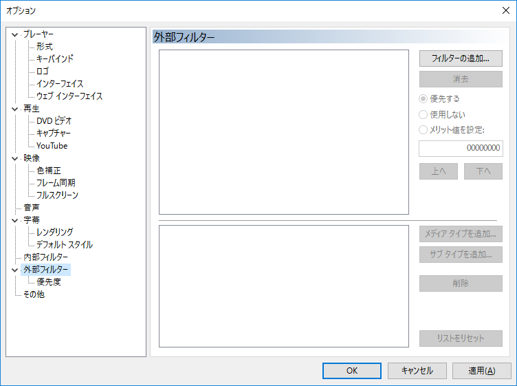
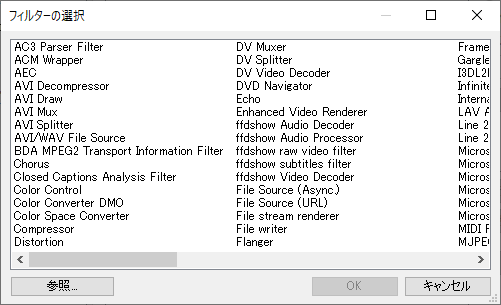
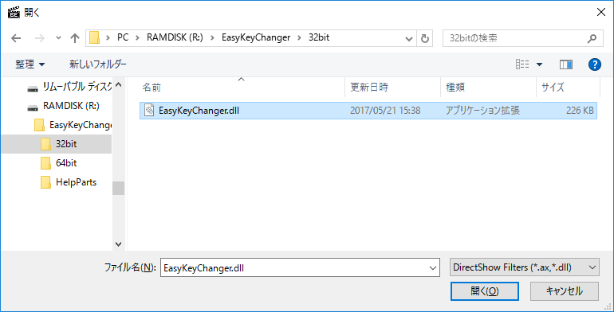
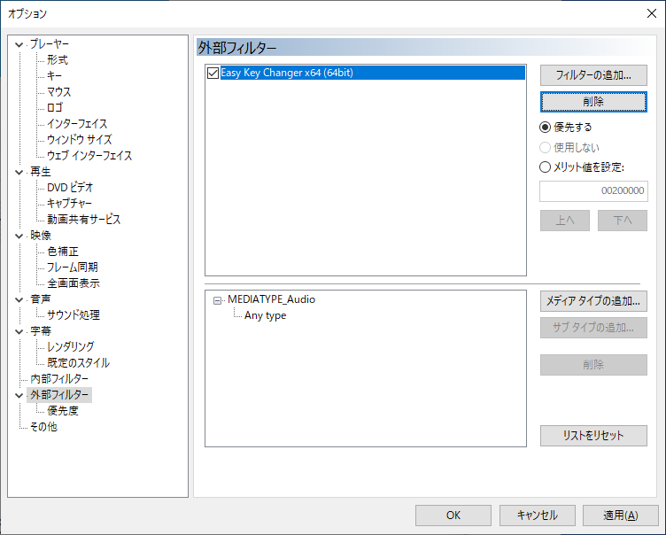
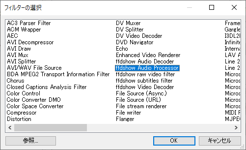
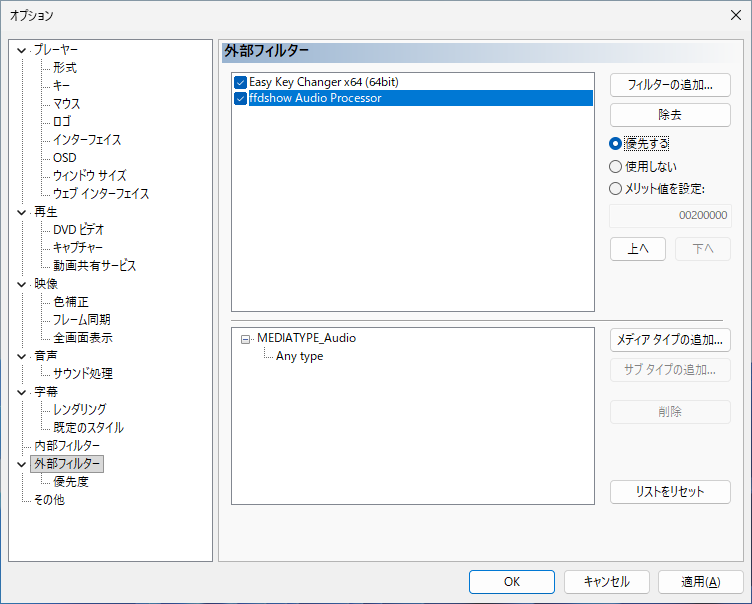
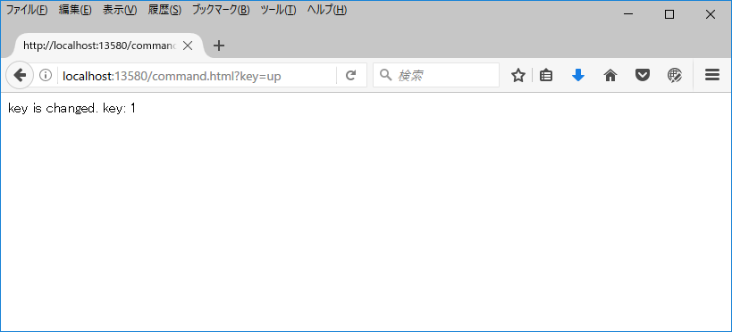

Introduction

Easy Key Changer is a DirectShow filter that allows you to adjust the key (pitch) of audio being played in real-time. It works similarly to adjusting the key on a karaoke machine.The feature that allows you to specify the adjustment amount via a browser is a distinctive characteristic.
Easy Key Changer is a DirectShow filter, so it does not work on its own. Please use it together with another application (host application) that can utilize DirectShow filters.
For the remainder of this help section, the explanation will use MPC-BE as the host application for a concrete example.
The screenshot shown is a reduced version. Clicking on it will enlarge it.
Installation
Installing MPC-BE
First, install MPC-BE as the host application for Easy Key Changer.
Download MPC-BE from the MPC-BE website.
Download the 64-bit version. The 64-bit version will have "x64" in its filename.
Example: MPC-BE.1.9.0.x64-installer.zip
Install MPC-BE by following the instructions on the MPC-BE website. The default settings should be fine.
(Note)
Operation has been verified using MPC-BE x64 1.9.0 (installer version).
Please note that Easy Key Changer may not function correctly if the MPC-BE version is outdated.
Installing Easy Key Changer
Easy Key Changer can be installed by extracting the downloaded zip file to any location.
Installing ffdshow
ffdshow is included in ffdshow tryouts.
Download ffdshow from the ffdshow tryouts download page. Please download the 64-bit version.
Install ffdshow by following the instructions on the ffdshow tryouts website. The default settings should be fine.
MPC-BE Settings
 
If the menu bar is not visible, right-click on the MPC-BE window and select [Options] from the context menu that appears.
Pressing the O key on the keyboard will also open the options window.
Adding Easy Key Changer
  
In the window that opens, select the EasyKeyChanger.dll file in the subfolder of the folder where you extracted Easy Key Changer.
After selecting EasyKeyChanger.dll, click the "Open" button.
Adding ffdshow Audio Processor
 
Usage
Controller
To use Easy Key Changer, it's easiest to use the "Controller" page next.
Please use the controller page to operate MPC-BE while music or video is "playing".
(Note)
Since Easy Key Changer processes audio based on a specific duration of audio data, changing the key causes a slight delay in the timing of the sound output.
You can also operate the system without using a controller by entering commands into the URL bar of a web browser (such as Firefox).
This method is explained in the following sections.
Key Change

http://localhost:13580/command.html?key=up
This will display a message in the browser saying "key is changed. key: 1" and the key will be raised by 1.
By adding commands after "http://localhost:13580/command.html?", you can control the system.
The commands for changing the key are as follows. Please enter the commands in lowercase.
| Purpose | Command | Note |
|---|---|---|
| Raise Key | key=up | Raises the key by 1 (a semitone). Can be raised up to 1 octave (12 semitones). Example) http://localhost:13580/command.html?key=up |
| Lower Key | key=down | Lowers the key by 1 (a semitone). Can be lowered up to 1 octave (-12 semitones). Example) http://localhost:13580/command.html?key=down |
| Specify Key | key=n (Number) | Specifies the key change amount directly. Can be specified within the range of -12≦n≦12. Specifying 0 returns to the original song key. Example) http://localhost:13580/command.html?key=-2 |
Depending on the host application's behavior, the key change setting will generally reset—reverting to the original key—whenever the song changes.
Others
The commands for changing the key are as follows. Please enter the commands in lowercase.
| Purpose | Command | Note |
|---|---|---|
| Version Information | help=ver | Displays version information in the browser. Example) http://localhost:13580/command.html?help=ver |
Continuous Operation Prevention
Easy Key Changer includes a feature that prevents the same command from being executed consecutively by mistake.
When sending commands, you can use the token command to prevent continuous operations.
| Purpose | Command | Note |
|---|---|---|
| Continuous Operation Prevention | token=s (String) | When used with other commands, it prevents continuous operations by only accepting the command if the current token string is different from the previous one. For example, if you initially add token=a to raise the key, the key will be raised. However, if you try to raise the key again with token=a, it will not work. To raise the key again, you would need to add a different token string like token=b. Example) http://localhost:13580/command.html?key=up&token=a |
Audio Processing Parameter Changes
Changes the parameters used for audio processing during key changes. Normally, this command is not needed. Setting inappropriate values may cause unexpected behavior.
| Purpose | Command | Note |
|---|---|---|
| Crossfade Width Change | cross=n (Number) | Changes the crossfade width. The unit is milliseconds. The default value is restored when the key is changed. Example) http://localhost:13580/command.html?cross=10 |
| Cut Width Change | cut=n (Number) | Changes the cut width. The unit is milliseconds. The default value is restored when the key is changed. Example) http://localhost:13580/command.html?cut=60 |
Specifications
There may be some overlap with previous explanations, but here are the specifications for Easy Key Changer.
Operating Environment
Please refer to the support information on the official Easy Key Changer page.
Input Audio Format
The audio format processed by ffdshow Audio Processor or similar tools must be in the following format to allow key changes with Easy Key Changer.
| Format | Linear PCM |
|---|---|
| Sampling Rate | 4 kHz ～ 384 kHz |
| Bit Depth | 16 / 24 / 32 bit Integer or 32 bit Floating Point |
| Channel Count | 1 ～ 8 ch |
Troubleshooting
Please refer to the support page for Easy Key Changer.
Request
Buy me a coffee
 If you enjoyed this app, you can support me here:
If you enjoyed this app, you can support me here:
https://buymeacoffee.com/shinta0806
Social media accounts
Please follow my social media accounts.
Others
Database
| By type | Freeware |
|---|---|
| Classification | DirectShow Filter |
| Software Name | Easy Key Changer |
| Download | https://shinta.coresv.com/software/easykeychanger_jpn/#Download（Main） http://shinta0806be.ldblog.jp/archives/9212448.html（Backup） |
| Author | SHINTA |
| Author E-Mail | |
| Product Number | SHWI-040-A |
License
The following license applies to Easy Key Changer:
*This excludes portions provided by third parties that are subject to the original license.
*If you wish to use this for commercial purposes (such as YouTube monetization), see here.
*Please also see our request.